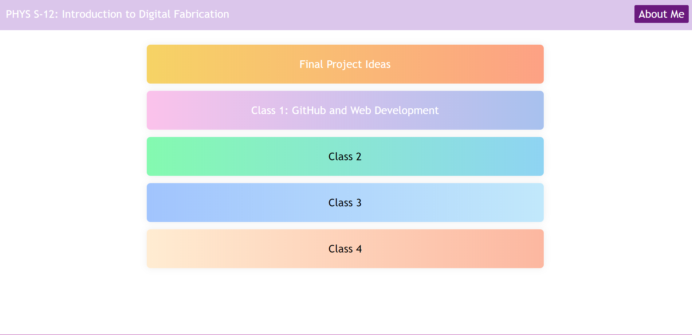

Since I've had a little bit of experience in HTML/CSS from Computers class in Middle School, the learning curve in creating my website wasn't so steep; however, I did have to reacquaint myself with the basics via W3 Schools. I copied some of the code from W3 Schools to create a navigation bar at the top of each page, although I changed some of the styling and colors in CSS.
My biggest struggle was figuring out how to specify file paths. Maybe I didn't have as many folders when I had previously done HTML, which is why file path notation seemed to be so new to me. Eventually, I figured out how to use relative file paths with / for files located at the root of the current web, ./ for files located in folders located in the current folder, and ../ for files located in folders one level above the current folder. I had to edit the navigation bar file paths depending on the page, but I'm glad to have finally figured this out!
This is how my website's homepage currently looks with some broken links for documentation of the next few classes, but I hope to improve the layout throughout the course as I get better at HTML/CSS.
This is also my first time using GitHub, so I was a bit confused at first about repositories and pushing, but through some trial and error, I've figured it out!